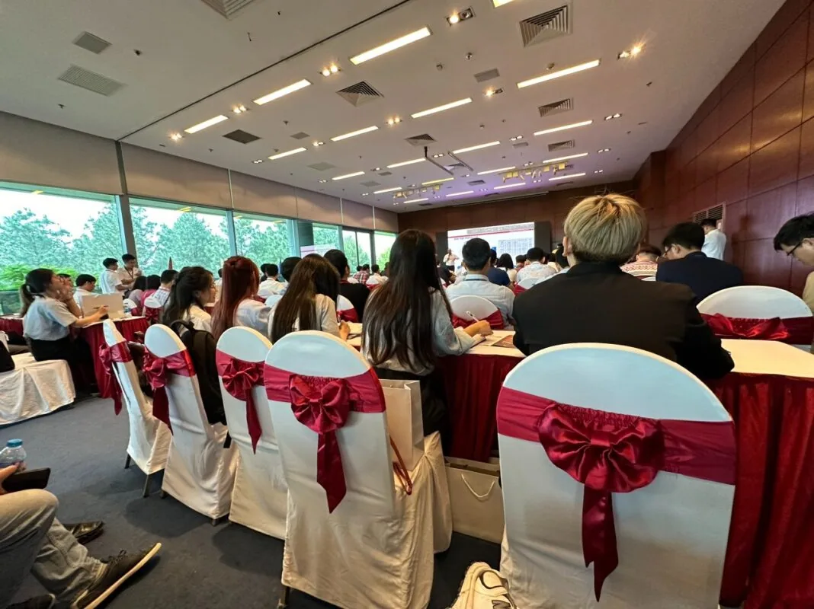
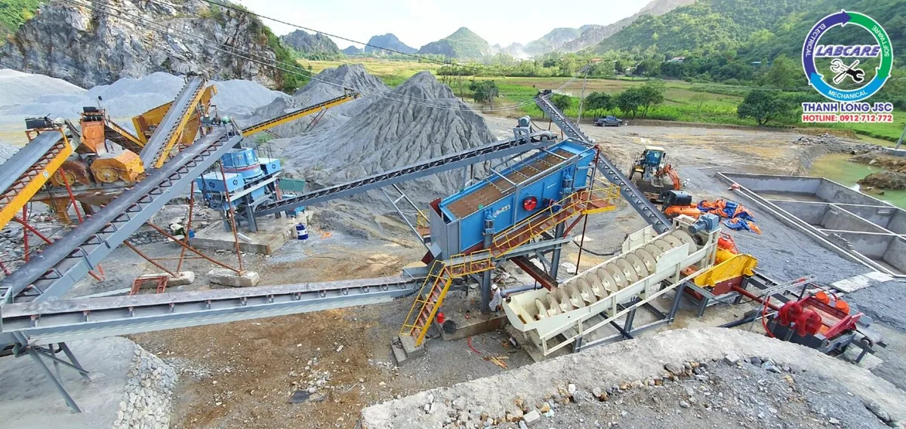

Thực trạng Cát nhân tạo trong xây dựng cầu đường hiện nay
Hiện nay, cát nhân tạo trong xây dựng cầu đường chưa được biết đến nhiều. Các công trình xây dựng vẫn chủ yếu sử dụng nguồn cát tự nhiên được khai thác từ lòng sông, mỏ cát tự nhiên….
Hoạt động đầu tư xây dựng cơ sở hạ tầng ngày càng phát triển nhanh chóng. Điều này tác động lớn đến nguồn cung VLXD, trong đó có cát. Điều này đã tác động lớn đến môi trường sinh thái, gây xói mòn bờ sông và dẫn đến tình trạng khai thác cát lậu tràn lan. Mất an ninh trật tự… Trước thực trạng đó, việc sản xuất cát nhân tạo thay thế cát tự nhiên ngày càng được ưu tiên hàng đầu.

Thực trạng cát nhân tạo hiện nay
Cát nhân tạo loại bỏ hầu hết các tạp chất bị lẫn trong sản phẩm. Tránh gây ra nhiều hậu quả ảnh hưởng tiêu cực đến bê tông. Đồng thời giúp nguyên liệu thô dễ dàng tái chế, xử lý thông qua hệ thống lọc. Quá trình lọc, rửa và tách các mỏ đá, sỏi, sỏi sông hay chất thải xây dựng, công nghiệp, khoáng sản.
Trong hội nghị Triển lãm Mining tại Việt Nam 2024 được tổ chức tại Hà Nội từ ngày 24 đến 26/4. Các doanh nghiệp liên quan trong ngành xây dựng, công trình cầu đường. Khai khoáng đã phối hợp tổ chức Hội thảo về công nghệ sản xuất cát nhân tạo.

Sự thiếu hụt cát tự nhiên trong xây dựng
Ông Lương Văn Hùng cho hay: “Nguồn cát tự nhiên khan hiếm đang ảnh hưởng trực tiếp đến tiến độ cũng như chất lượng của nhiều công trình xây dựng trong nước. Khai thác cát tự nhiên cực kỳ khó khăn. Vận chuyển cát tự nhiên chịu nhiều chi phí khiến giá thành của các công trình xây dựng đang bị đội lên. Một số công trình hiện nay đang thiếu nghiêm trọng nguồn cung cát dẫn đến chậm, giãn tiến độ. Việc kéo dài thời gian thi công các công trình càng chi phí tăng cao. Gây ảnh hưởng lớn đến sự phát triển kinh tế – xã hội”
Cát nhân tạo trong các công trình xây dựng cầu đường

Cát nhân tạo ngày càng được sử dụng phổ biến trong xây dựng cầu đường, mang lại nhiều lợi ích so với cát tự nhiên. Dưới đây là một số ưu điểm và ứng dụng cụ thể của cát nhân tạo trong lĩnh vực này:
Ưu điểm của cát nhân tạo trong các công trình xây dựng cầu đường
Giảm thiểu khai thác cát tự nhiên:
Việc khai thác cát tự nhiên ồ ạt gây ra nhiều hệ lụy cho môi trường. Như sạt lở đất, ô nhiễm nguồn nước, ảnh hưởng đến hệ sinh thái. Cát nhân tạo được sản xuất từ các nguồn vật liệu tái chế hoặc đá nghiền. Góp phần bảo vệ tài nguyên thiên nhiên và giảm thiểu tác động tiêu cực đến môi trường.
Chất lượng ổn định:
Cát nhân tạo có kích thước hạt đồng đều, hàm lượng tạp chất thấp. Đảm bảo chất lượng bê tông và vữa tốt hơn. Nhờ vậy, công trình thi công bằng cát nhân tạo có độ bền cao. Khả năng chịu lực tốt và tuổi thọ lâu dài.
Tính linh hoạt:
Cát nhân tạo có thể được sản xuất với các cấp phối khác nhau phù hợp với từng loại bê tông và vữa sử dụng trong xây dựng cầu đường. Điều này giúp tối ưu hóa hiệu quả thi công và tiết kiệm vật liệu.
Giá thành hợp lý:
So với cát tự nhiên, giá thành sản xuất cát nhân tạo thường thấp hơn, góp phần giảm chi phí xây dựng công trình.

Ứng dụng của cát nhân tạo
- Làm bê tông và vữa cho các hạng mục thi công cầu đường: Cát nhân tạo được sử dụng rộng rãi trong thi công các hạng mục như: dầm cầu, sàn cầu, cọc, trụ cầu, đệm cầu, lớp nền, lớp mặt đường, v.v.
- Sản xuất bê tông tươi: Cát nhân tạo là thành phần quan trọng trong sản xuất bê tông tươi cung cấp cho các công trình xây dựng cầu đường.
- Lấp nền: Cát nhân tạo có thể sử dụng để lấp nền móng cầu, giúp tăng cường khả năng chịu tải và ổn định cho công trình.
- San lấp mặt bằng: Cát nhân tạo được sử dụng để san lấp mặt bằng trước khi thi công các hạng mục khác của cầu đường.
Một số vấn đề cần lưu ý
- Chất lượng cát nhân tạo: Cần lựa chọn cát nhân tạo được sản xuất từ nguồn nguyên liệu uy tín. Đảm bảo chất lượng theo quy chuẩn, dây chuyền sản xuất theo Tiêu chuẩn Công nghệ Thuỵ Điển.
- Kiểm tra kỹ thuật: Cần kiểm tra kỹ lưỡng chất lượng cát nhân tạo trước khi sử dụng. Đảm bảo đáp ứng các yêu cầu kỹ thuật thi công. Sản phẩm đầu ra đạt tiêu chuẩn TCVN 12:2008. Tiêu chuẩn về cát nghiền cho bê tông và vữa xây dựng.
- Bảo quản đúng cách: Cần bảo quản cát nhân tạo nơi khô ráo, thoáng mát. Tránh để tiếp xúc trực tiếp với ánh nắng mặt trời và mưa gió để giữ được chất lượng tốt nhất.
Nhìn chung, cát nhân tạo là một vật liệu xây dựng thay thế hiệu quả cho cát tự nhiên trong lĩnh vực xây dựng cầu đường. Việc sử dụng cát nhân tạo góp phần bảo vệ môi trường, nâng cao chất lượng công trình và tiết kiệm chi phí xây dựng.
Đơn vị cung cấp các thiết bị trong dây chuyền nghiền cát nhân tạo theo tiêu chuẩn Công nghệ Thuỵ Điển
Máy nghiền đá Thanh Long đơn vị cung cấp các thiết bị về máy nghiền đá, máy nghiền cát, máy nghiền công suất nhỏ, máy nghiền phụ phẩm xây dựng.
Ngoài ra, Thanh Long JSC còn cung cấp vật tư máy nghiền, phụ tùng máy nghiền đá và cát. Với mục tiêu phát triển lớn mạnh, Máy nghiền đá Thanh Long luôn đặt mục tiêu của khách hàng làm trọng tâm, đi đến sự hài lòng cho khách hàng.
Liên hệ với chúng tôi để được tư vấn và đưa ra các giải pháp thu hồi vốn hiệu quả